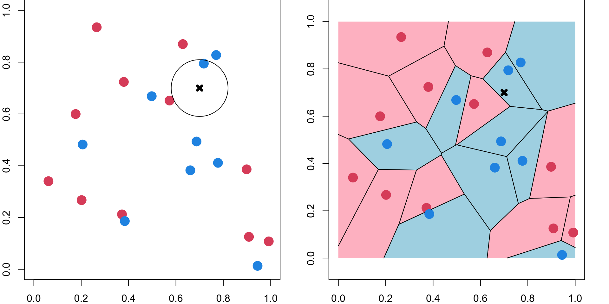
K-nearest Neighbors
MSSC 6250 Statistical Machine Learning
Dr. Cheng-Han Yu
Department of Mathematical and Statistical Sciences
Marquette University
Department of Mathematical and Statistical Sciences
Marquette University
Nonparametric Examplar-based Methods
So far we have mostly focused on parametric models, either unconditional \(p({\bf y} \mid \boldsymbol \theta)\) or conditional \(p({\bf y} \mid \mathbf{x}, \boldsymbol \theta)\), where \(\boldsymbol \theta\) is a fixed-dimensional vector of parameters. 1
The parameters are estimated from the training set \(\mathcal{D} = \{(\mathbf{x}_i, \mathbf{y}_i)\}_{i=1}^n\) but after model fitting, the data is not used anymore.
- The nonparametric models that keep the training data around at the test time are called examplar-based models, instance-based learning or memory-based learning.
- K-nearest neighbors classification and regression
- Kernel regression
- Local regression, e.g., LOESS
- Kernel density estimation
- The examplar-based models usually perform a local averaging technique based on the similarity or distance between a test input \(\mathbf{x}_0\) and each of the training inputs \(\mathbf{x}_i\).
K-nearest Neighbor Regression
K-nearest neighbor (KNN) is a nonparametric method that can be used for regression and classification.
In KNN, we don’t have parameters \(\boldsymbol \beta\), and \(f(\mathbf{x}_0) = \mathbf{x}_0'\boldsymbol \beta\) in linear regression.1
We directly estimate \(f(\mathbf{x}_0)\) using our examples or memory.
\[ \widehat{y}_0 = \frac{1}{k} \sum_{x_i \in N_k(x_0)} y_i,\] where the neighborhood of \(x_0\), \(N_k(x_0)\), defines the \(k\) training data points that are closest to \(x_0\).
- Closeness (Similarity) is defined using a distance measure, such as the Euclidean distance.
1-Nearest Neighbor Regression
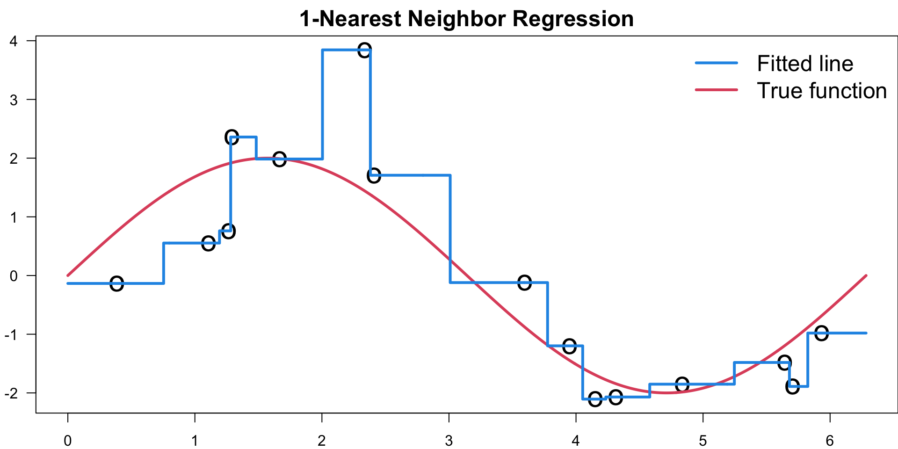Tuning \(k\)
- \(y_i = 2\sin(x_i) + \epsilon_i, \quad \epsilon_i \stackrel{iid}{\sim} N(0, 1), \quad i = 1, \dots, 200\)
The Bias-variance Trade-off
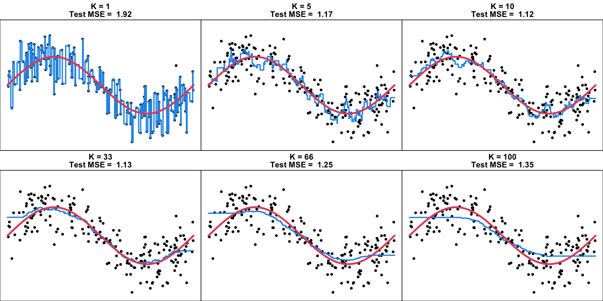Bias-Variance Trade-Off
\[\begin{aligned} \text{E}\Big[ \big( Y - \widehat f(x_0) \big)^2 \Big] &= \underbrace{\text{E}\Big[ ( Y - f(x_0))^2 \big]}_{\text{Irreducible Error}} + \underbrace{\Big(f(x_0) - \text{E}[\widehat f(x_0)]\Big)^2}_{\text{Bias}^2} + \underbrace{\text{E}\Big[ \big(\widehat f(x_0) - \text{E}[\widehat f(x_0)] \big)^2 \Big]}_{\text{Variance}} \end{aligned}\]- As \(k \uparrow\), bias \(\uparrow\) and variance \(\downarrow\) (smoother)
- As \(k \downarrow\), bias \(\downarrow\) and variance \(\uparrow\) (more wiggly)
Degrees of Freedom
\(k\) determines the model complexity and degrees of freedom (df).
In general, the df can be defined as
\[\text{df}(\hat{f}) = \frac{1}{\sigma^2}\text{Trace}\left( \mathrm{Cov}(\hat{\mathbf{y}}, \mathbf{y})\right)= \frac{1}{\sigma^2}\sum_{i=1}^n \mathrm{Cov}(\hat{y}_i, y_i)\]
\(k = 1\): \(\hat{f}(x_i) = y_i\) and \(\text{df}(\hat{f}) = n\)
\(k = n\): \(\hat{f}(x_i) = \bar{y}\) and \(\text{df}(\hat{f}) = 1\)
For general \(k\), \(\text{df}(\hat{f}) = n/k\).
Linear regression with \(p\) coefficients: \(\text{df}(\hat{f}) = \text{Trace}\left( {\bf H} \right) = p\)
For any linear smoother \(\hat{\mathbf{y}} = {\bf S} \mathbf{y}\), \(\text{df}(\hat{f}) = \text{Trace}({\bf S})\).
K-nearest Neighbor Classification
- Instead of taking average in regression, KNN classification uses majority voting:
Look for the most popular class label among its neighbors.
- 1NN decision boundary is a Voronoi diagram.
Example: ESL.mixture.rda
The KNN decision boundary is nonlinear.
R:
class::knn(),kknn::kknn(),FNN::knn(),parsnip::nearest_neighbor()
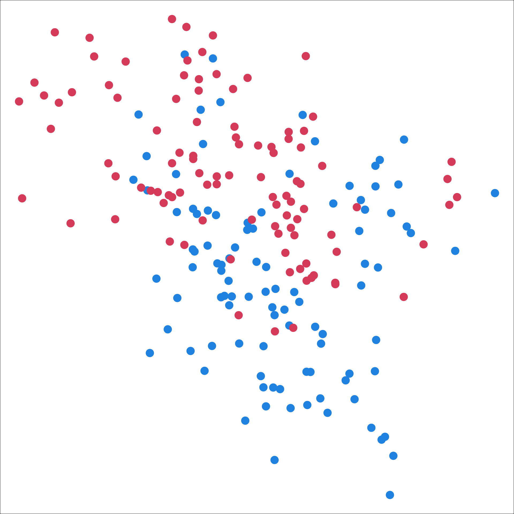
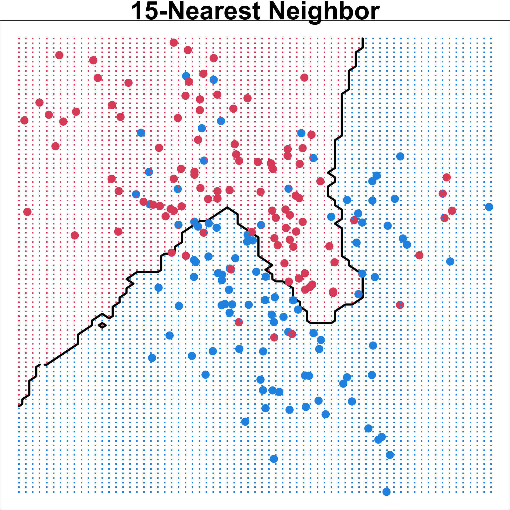
Example: ESL.mixture.rda
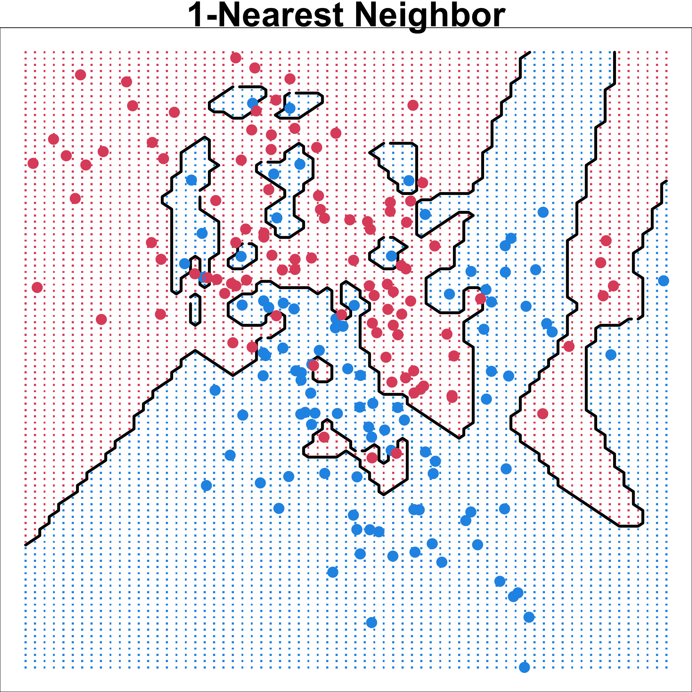
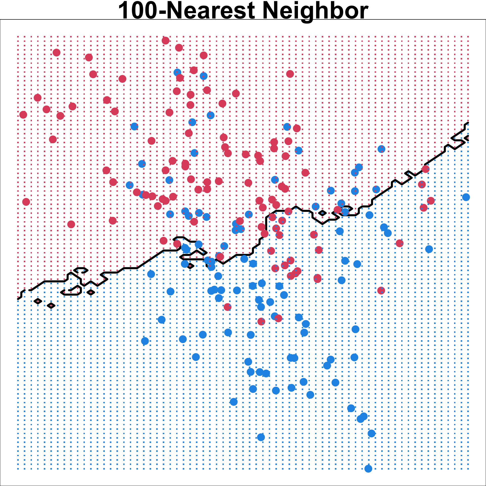
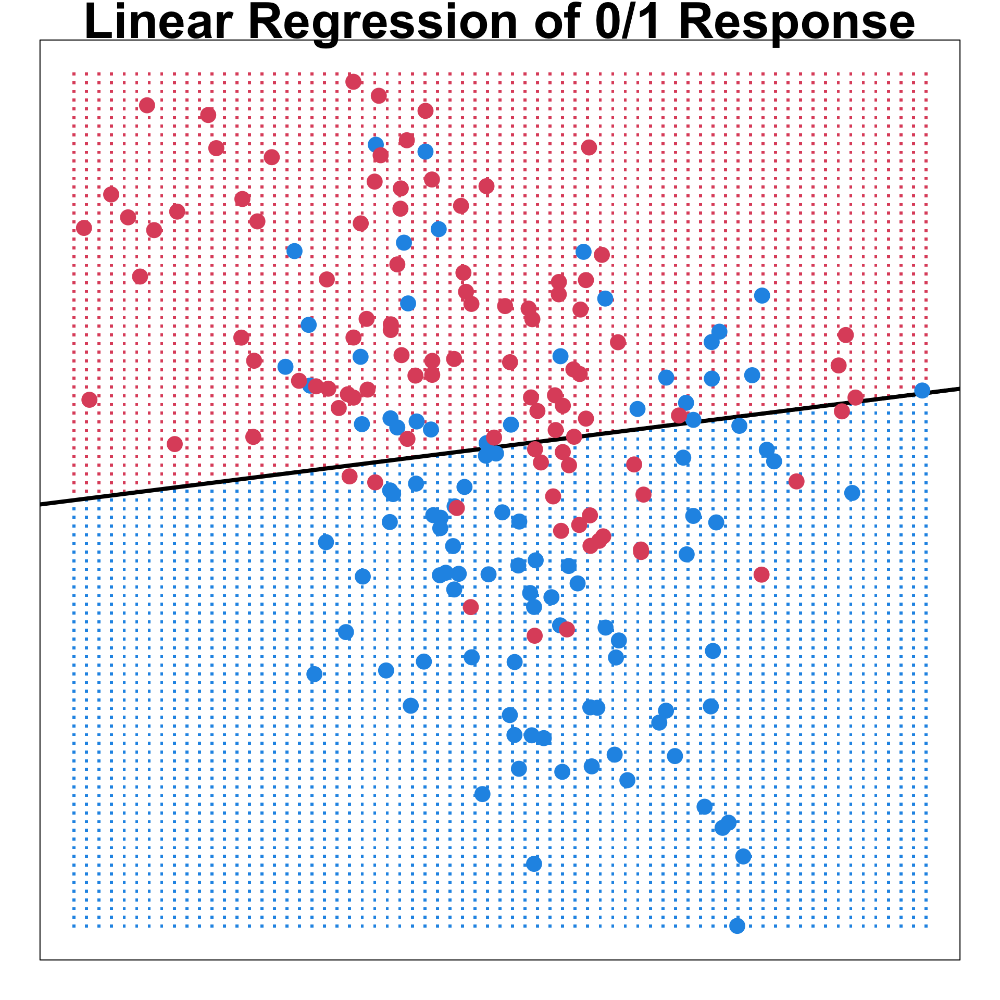
Confusion Matrix
knn_fit <- class::knn(train = x, test = x, cl = y, k = 15)
caret::confusionMatrix(table(knn_fit, y))Confusion Matrix and Statistics
y
knn_fit 0 1
0 82 13
1 18 87
Accuracy : 0.845
95% CI : (0.7873, 0.8922)
No Information Rate : 0.5
P-Value [Acc > NIR] : <2e-16
Kappa : 0.69
Mcnemar's Test P-Value : 0.4725
Sensitivity : 0.8200
Specificity : 0.8700
Pos Pred Value : 0.8632
Neg Pred Value : 0.8286
Prevalence : 0.5000
Detection Rate : 0.4100
Detection Prevalence : 0.4750
Balanced Accuracy : 0.8450
'Positive' Class : 0
Choosing K
Code
set.seed(2025)
library(caret)
control <- trainControl(method = "cv", number = 10)
knn_cvfit <- train(y ~ ., method = "knn",
data = data.frame("x" = x, "y" = as.factor(y)),
tuneGrid = data.frame(k = seq(1, 40, 1)),
trControl = control)
par(mar = c(4, 4, 0, 0))
plot(knn_cvfit$results$k, 1 - knn_cvfit$results$Accuracy,
xlab = "K", ylab = "Classification Error", type = "b",
pch = 19, col = 2)Best K
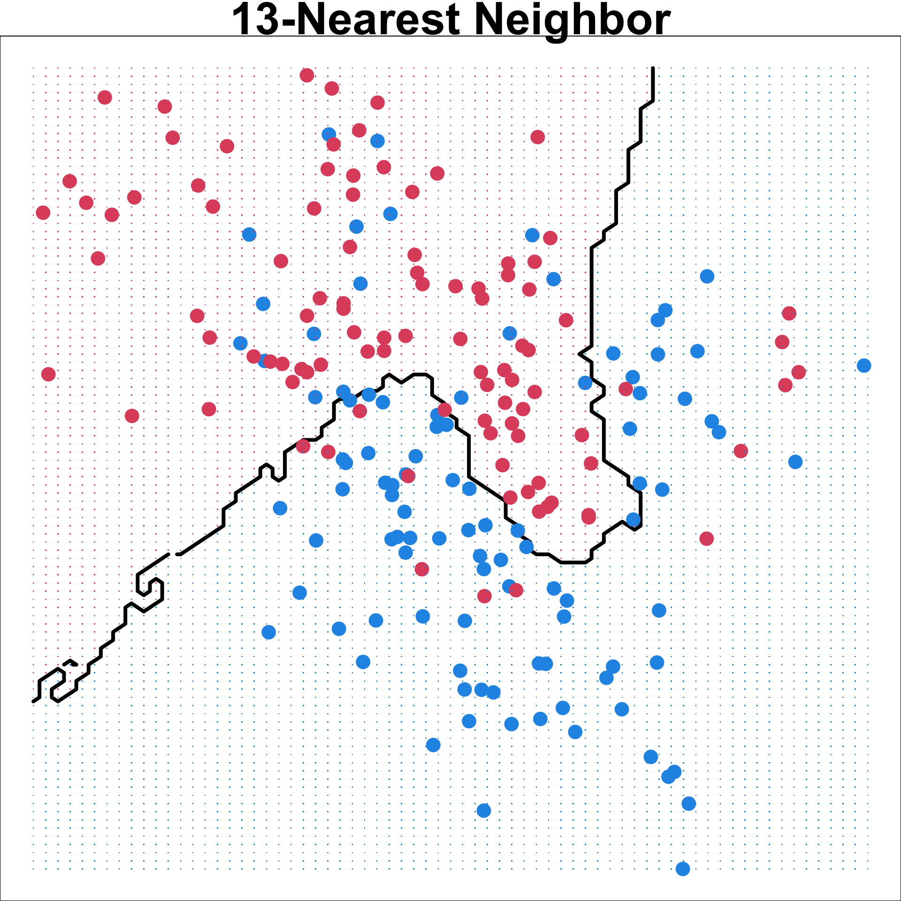
Confusion Matrix and Statistics
y
knn_fit 0 1
0 82 14
1 18 86
Accuracy : 0.84
95% CI : (0.7817, 0.8879)
No Information Rate : 0.5
P-Value [Acc > NIR] : <2e-16
Kappa : 0.68
Mcnemar's Test P-Value : 0.5959
Sensitivity : 0.8200
Specificity : 0.8600
Pos Pred Value : 0.8542
Neg Pred Value : 0.8269
Prevalence : 0.5000
Detection Rate : 0.4100
Detection Prevalence : 0.4800
Balanced Accuracy : 0.8400
'Positive' Class : 0
Scaling and Distance Measures
By default, we use Euclidean distance (\(\ell_2\) norm) \(d^2(\mathbf{u}, \mathbf{v}) = \lVert \mathbf{u}- \mathbf{v}\rVert_2^2 = \sum_{j=1}^p (u_j - v_j)^2\)
This measure is not scale invariant: Multiplying the data with a factor changes the distance!
- Often consider a normalized version:
\[d^2(\mathbf{u}, \mathbf{v}) = \sum_{j=1}^p \frac{(u_j - v_j)^2}{\sigma_j^2}\]
- Mahalanobis distance takes the covariance structure into account
\[d^2(\mathbf{u}, \mathbf{v}) = (\mathbf{u}- \mathbf{v})' \Sigma^{-1} (\mathbf{u}- \mathbf{v}),\]
- If \(\Sigma = \mathbf{I}\), Mahalanobis = Euclidean
- If \(\Sigma = diag(\sigma^2_1, \dots, \sigma^2_p)\), Mahalanobis = normalized version
Mahalanobis distance
Red and green points have the same Euclidean distance to the center.
The red point is farther away from the center in terms of Mahalanobis distance.
Example: Image Data ElemStatLearn::zip.train
Digits 0-9 scanned from envelopes by the U.S. Postal Service
\(16 \times 16\) pixel images, totally \(p=256\) variables
At each pixel, we have the gray scale as the numerical value
1NN with Euclidean distance gives 5.6% error rate
1NN with tangent distance (Simard et al., 1993) gives 2.6% error
Example: 3NN on Image Data
# fit 3nn model and calculate the error
knn.fit <- class::knn(zip.train[, 2:257], zip.test[, 2:257], zip.train[, 1], k = 3)
# overall prediction error
mean(knn.fit != zip.test[, 1])[1] 0.05480817# the confusion matrix
table(knn.fit, zip.test[, 1])Example: 3NN on Image Data
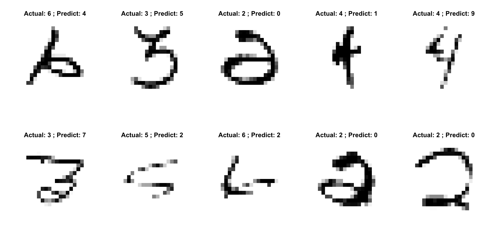Computational Issues
Need to store the entire training data for prediction. (Lazy learner)
Needs to calculate the distance from \(x_0\) to all training sample and sort them.1
Distance measures may affect accuracy.
Curse of Dimensionality
- KNN does does not work well in high-dimensional space (\(p \gg n\)) due to curse of dimensionality.
As \(p\) increases, it’s getting harder to find \(k\) neighbors in the input space. KNN needs to explore a large range of values along each input dimension to grab the “neighbors”.
The “neighbors” of \(x_0\) are in fact far away from \(x_0\), and so they may not be good predictors about the behavior of the function at \(x_0\).
The method is not local anymore despite the name “nearest neighbor”!
In high dimensions KNN often performs worse than linear regression.
Curse of Dimensionality
Data points are uniformly spread out on \([0, 1]^p\).
In 10 dimensions we need to cover 80% of the range of each coordinate to capture 10% of the data.
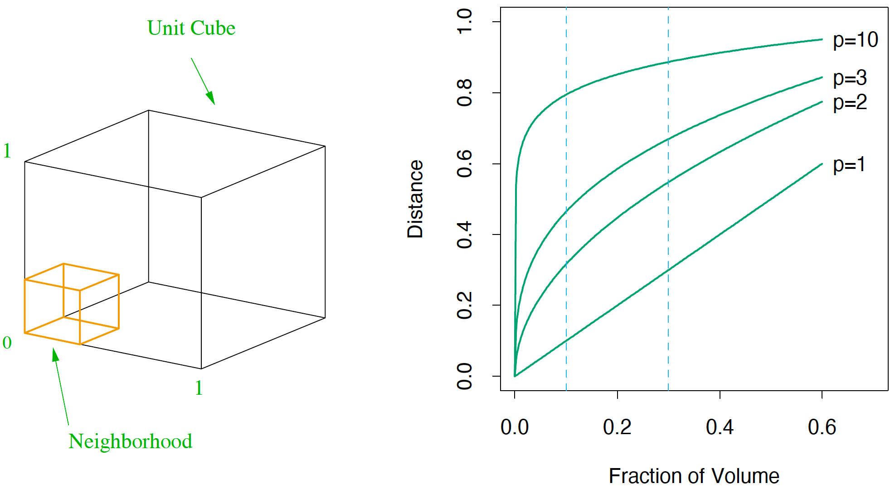